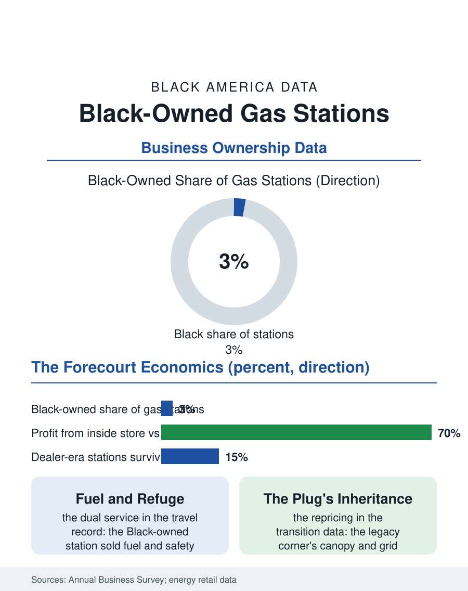

Black Business
Fuel and Refuge: Black-Owned Gas Stations
The Black-owned station was Green Book infrastructure, thinned by self-service and tank regulation, now standing where the charging map will be drawn. The station file.

The gas station was the road's embassy during the Green Book era, and Black-owned stations, selling the major brands' gasoline from the community's corners, were strategic assets as much as businesses: fuel, restrooms, and safety for the traveling family. The business census counts a small, diminished population of Black-owned stations today, the trade transformed by consolidation and the convenience store model. This article reads the station file.
Fuel and Refuge
The historical file is inseparable from the travel file: in the decades when the highway's services were rationed by race, the Black-owned station, listed in the travel guides with the Esso stations whose corporate policy famously welcomed the trade, was infrastructure for a people's mobility, its restrooms and its proprietor's knowledge of the safe road ahead constituting a service no price sign advertised. The oil companies' dealer model distributed the era's opportunity unevenly but really: the lessee dealer system put Black operators behind the pumps of the branded majors in the community's neighborhoods, building a class of proprietors whose stations anchored the commercial corridors alongside the funeral homes and the insurers. The self-service revolution of the 1970s cut the trade's labor and its margins simultaneously, the dealer's profit migrating from the pump to the convenience store's shelves, and the station's economics became the convenience file's, the fuel a traffic driver for the margin inside. The environmental era then repriced the ground itself: the underground storage tank regulations, the leaking tank liabilities, and the cleanup funds converted the aging station into a balance sheet risk that the capital-poor dealer class was least positioned to carry, and the Black dealer population contracted through the 1980s and 1990s on the regulation's schedule as much as the market's.
The Modern Forecourt
The contemporary station is a convenience store with pumps, and the Black-owned remnant operates inside that model's economics: fuel margins of cents per gallon, the inside store's lottery, tobacco, and food margins carrying the business, the franchise and jobber relationships setting the terms from above. The census data count the Black-owned share of the station universe in the low single digits, employer stations fewer, the survivors clustered in the community corridors where the station remains the corner institution the evening's foot traffic organizes around. The electric transition is the file's open horizon: the charging buildout's siting decisions, the federal corridor programs and the utilities' make-ready investments, are drawing a new fuel map on which the legacy station's position, its corner, its canopy, its grid connection, is an asset whose value the transition is repricing upward for the owners positioned to host the chargers, and the equity guidelines written into the federal programs name the community station as an intended beneficiary class, a policy echo of the Green Book era's understanding that fuel access is civil infrastructure. The lottery and tobacco margins carry their own community ledger, the station's product mix being the corner's compromise with the neighborhood's vices and hopes, a tension the proprietors navigate as citizens rather than the abstractions the policy debate prefers.
The Corner's Ledger
The station file closes at the corner itself, where the Black proprietor's business has always been read by the community in two ledgers: the commercial one, gallons and margins, and the civic one, the lights on, the restrooms open, the teenager employed, the traveler told the truth about the road. The dealer tradition produced a distinctive civic class in the community's twentieth century, station owners on the school boards and the church trustee lists, their forecourts the era's informal information exchanges, and the tradition's survivors carry it into the convenience era with the same double accounting. The forward file is the charger's: whether the electric transition's public investment reaches the legacy corner with the capital to convert, or whether the new fuel map is drawn, as the old one was, around the community's corners rather than on them. The census counts a few hundred Black-owned stations where thousands of dealer-era proprietors once stood. The file's judgment is the travel file's own: a people that crossed a hostile continent on the strength of the friendly pump does not underestimate the friendly plug, and the corner that provided the one is, on the evidence of its century, the natural and intended provider of the other.
More in Black Business
Black-Owned Businesses: Counts, Receipts, and the Representation Gap
About 161,000 Black-owned employer firms and three million solo ventures: how the Census Bureau counts Black business ownership, where firms concentrate, and the gap between population share and business share.
Black Median Net Worth: The Wealth Gap in Federal Reserve Data
The Federal Reserve puts Black median family net worth at $44,900, against $285,000 for White families — about 16 cents on the dollar. The widest gap in economic data.
Black Buying Power: The $1.8 Trillion Consumer Economy
Black buying power is estimated at about $1.8 trillion — larger than the economy of most nations. What the figure measures, who produces it, and what it buys.
Source: U.S. Census Bureau, Annual Business Survey for gasoline stations; National Association of Convenience Stores industry data.